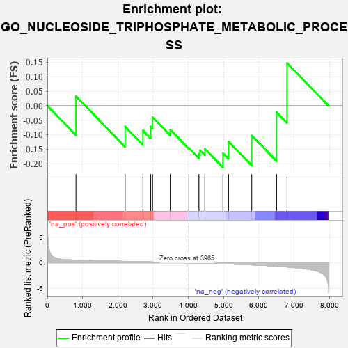
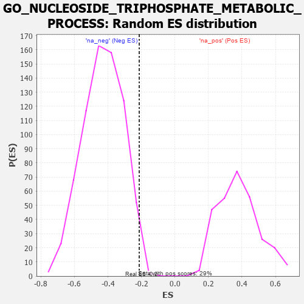

| | | Dataset | 7d |
| Phenotype | NoPhenotypeAvailable |
| Upregulated in class | na_neg |
| GeneSet | GO_NUCLEOSIDE_TRIPHOSPHATE_METABOLIC_PROCESS |
| Enrichment Score (ES) | -0.21311015 |
| Normalized Enrichment Score (NES) | -0.49571115 |
| Nominal p-value | 0.9859155 |
| FDR q-value | 1.0 |
| FWER p-Value | 1.0 |
Table: GSEA Results Summary

Fig 1: Enrichment plot: GO_NUCLEOSIDE_TRIPHOSPHATE_METABOLIC_PROCESS
Profile of the Running ES Score & Positions of GeneSet Members on the Rank Ordered List
| PROBE | GENE SYMBOL | GENE_TITLE | RANK IN GENE LIST | RANK METRIC SCORE | RUNNING ES | CORE ENRICHMENT | | 1 | UCK2 | | | 812 | 0.529 | 0.0327 | No |
| 2 | EFL1 | | | 2207 | 0.276 | -0.0723 | No |
| 3 | UCKL1 | | | 2711 | 0.197 | -0.0853 | No |
| 4 | TAZ | | | 2933 | 0.161 | -0.0721 | No |
| 5 | DUT | | | 2985 | 0.152 | -0.0399 | No |
| 6 | ITPA | | | 3487 | 0.079 | -0.0827 | No |
| 7 | PARP1 | | | 4014 | -0.010 | -0.1463 | No |
| 8 | RAN | | | 4299 | -0.059 | -0.1668 | Yes |
| 9 | OPA1 | | | 4330 | -0.065 | -0.1539 | Yes |
| 10 | LRRK2 | | | 4467 | -0.087 | -0.1488 | Yes |
| 11 | COX5B | | | 4980 | -0.194 | -0.1638 | Yes |
| 12 | FLCN | | | 5140 | -0.235 | -0.1239 | Yes |
| 13 | ADA | | | 5798 | -0.405 | -0.1033 | Yes |
| 14 | MFN1 | | | 6502 | -0.663 | -0.0227 | Yes |
| 15 | TBPL1 | | | 6798 | -0.814 | 0.1474 | Yes |
Table: GSEA details [plain text format]

Fig 2: GO_NUCLEOSIDE_TRIPHOSPHATE_METABOLIC_PROCESS: Random ES distribution
Gene set null distribution of ES for GO_NUCLEOSIDE_TRIPHOSPHATE_METABOLIC_PROCESS